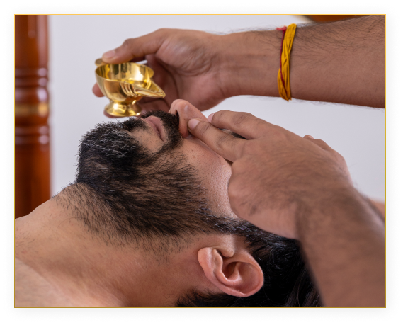

Shiro Abhyanga is a Sanskrit term comprised of two words: Shiro (head) and Abhyanga (massage). Shiro Abhyanga essentially means a complete massage of the head, neck, and shoulders using Ayurvedic herbal oils. These are the areas that are most affected by stress, which is why Shiro Abhyanga is beneficial in reducing pain and stress in these regions.
Duration: 7/14/21/28 Days (For more info book appointment or contact us)

Nasyam
Nasyam (Errhine Therapy) is a very powerful rejuvenative Panchakarma therapy that involves administering of medicated herbal oils through the nose. It's a method of Kalarichikilsa for treating illnesses related to the head region and impacts are wide-ranging.
Duration: 7/14/21/28 Days (For more info book appointment or contact us)
Sirolepanam
Sirolepanam or Thalapothichil is a traditional ayurvedic treatment for hair care that provides a complete solution to all hair problems. It reduces hair fall, stimulates the hair follicles to promote hair growth and improves shine of the hair strands. In this process, the relaxing and rejuvenating process, the scalp is first massaged using prescribed oils. The massage is followed by application of medicated pastes, medicines and juices of herbs mixed with oils to head and the whole scalp.
The mixture comprises of Amalaki, Musta, Panchagandha, etc. that are ground well to bring about a thick consistency. After the application of the paste, the scalp is covered with lotus or plantain leaf and a hole in made at the center of the leaf for frequent application of oil. This treatment also helps in relieving psychiatric disorders, neurological disorders and vision impairment.
Duration: 7/14/21/28 Days (For more info book appointment or contact us)
Kashayadhara
Kashaya means medicated decoction and Dhara means pouring. When these medicated decoction are poured over forehead the therapy is called as ShirokashayaDhara.
Duration: 7/14/21/28 Days (For more info book appointment or contact us)
Keshadhoopanam
Shiro Abhyanga is a Sanskrit term comprised of two words: Shiro (head) and Abhyanga (massage). Shiro Abhyanga essentially means a complete massage of the head, neck, and shoulders using Ayurvedic herbal oils. These are the areas that are most affected by stress, which is why Shiro Abhyanga is beneficial in reducing pain and stress in these regions.
Duration: 7/14/21/28 Days (For more info book appointment or contact us)